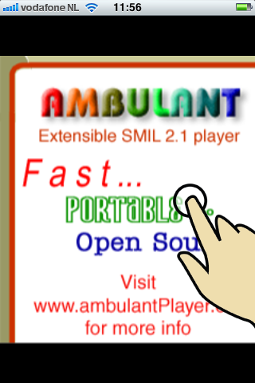
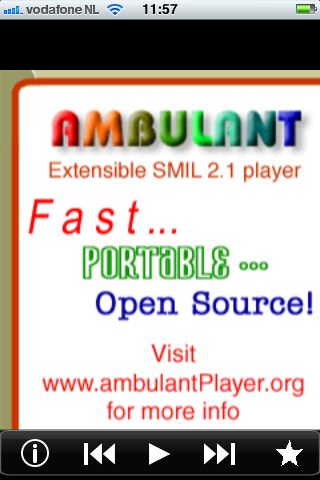
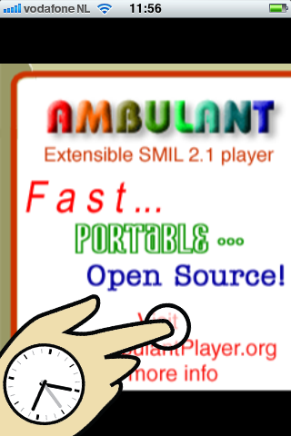
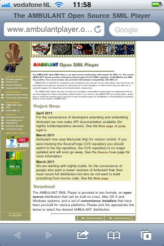
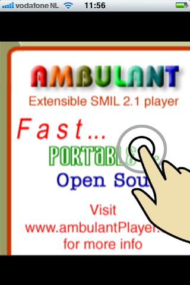
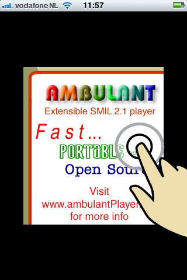
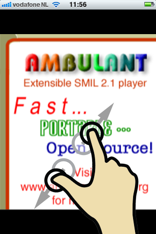
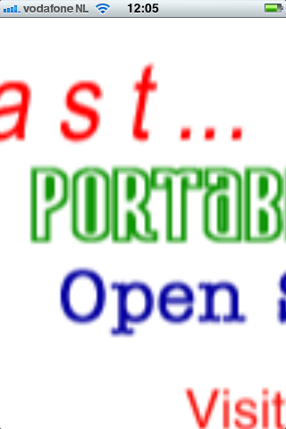

|  |  |
Allows you to see history and favorites, restart presentation, pause or play presentation, skip to next presentation and add current presentation to favorites.
|  |  |
|  |  |
|  |  |
Share Ambulant SMIL presentations by prefixing the URL with "ambulant:". This will let people click the link to automatically start playback in Ambulant. This works in emails, web pages, tweets, etc.
Visit the Demo Page on the website for some examples of SMIL presentations. Clicking the "iphone" links will open the presentation in Ambulant for immedeate playback.
The Ambulant Player website has contact information, background material on SMIL, installers for other platforms and much more.